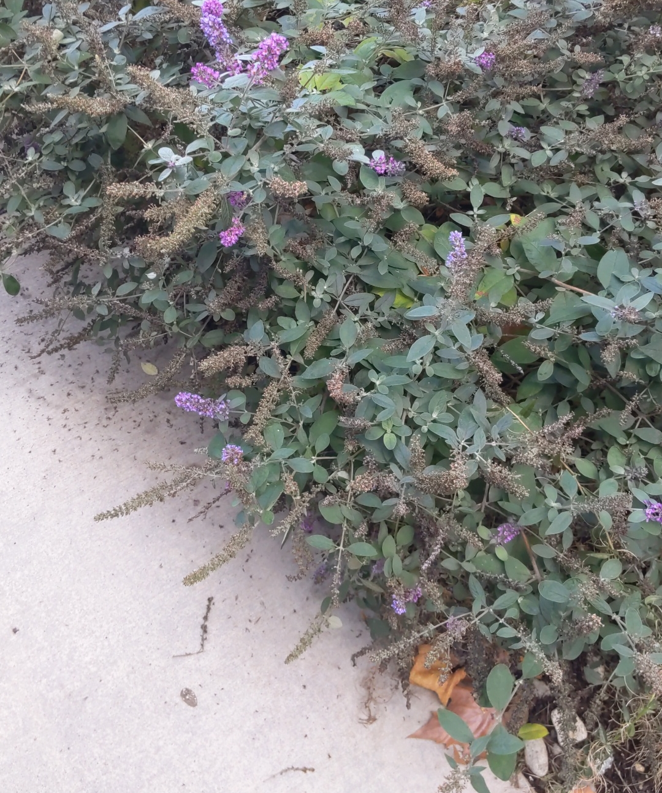

The goal of this color sheme was to be somthing luxurios, excting , and calimg.
A cold blue with a light violet makes it seem speicial and describle.
The touch of tourquise leads to a calmness.
Overall its a color scheme i would use for some sort desriable product.
This is a semi analogous color scheme that is similar.
